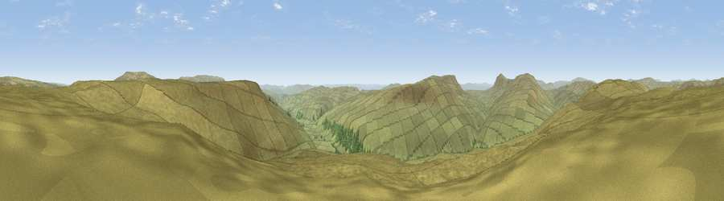

Viewpoint near Buckden
#7328 in England · top 11% of its area beats it · near BuckdenThe view, rendered

A 360° render of this exact spot computed from the terrain model, tree cover and land cover — summer colours, afternoon light, calibrated against photographs of famous viewpoints. Real trees, hedges and buildings will differ in detail.
The panorama
Grey silhouette: terrain skyline in each direction (720 bearings, Earth curvature and refraction included). Dashed green: skyline with trees (+15 m) and buildings (+8 m) as obstacles. Blue strip: how far the ground is visible on each bearing.
Where the view opens
Wedge length = distance to the farthest visible ground on that bearing (vegetation-aware). Rings at 10, 25 and 50 km.
What fills the view
99% grassland · 1% woodland
Angular shares of the visible panorama (visual magnitude), not map area. Landscape diversity 0.03 (0–1 Shannon).
Key numbers
More beautiful places nearby
The staircase of upgrades: each row has a higher view potential than everything closer. Driving times are estimates from straight-line distance, calibrated against real road routing — check an actual route before setting out.
| Place | Direction | Drive | Score |
|---|---|---|---|
| Viewpoint near Arncliffe | SW · 4 km | ~9 min | 68.1 |
| Viewpoint near Starbotton | SE · 4 km | ~9 min | 68.9 |
| Viewpoint near Horton in Ribblesdale | W · 6 km | ~12 min | 72.4 |
| Viewpoint near Buckden | ENE · 6 km | ~13 min | 75.5 |
| Viewpoint near Buckden | ENE · 6 km | ~13 min | 77.3 |
| Little Ingleborough | W · 16 km | ~29 min | 78.8 |
| Viewpoint near Ingleton | W · 17 km | ~29 min | 79.5 |
| Whernside | WNW · 18 km | ~31 min | 79.9 |
54.17992, -2.14513 · source: screening · position refined by local search. Computed location — check access rights before visiting.